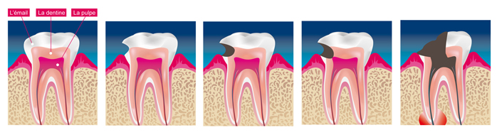
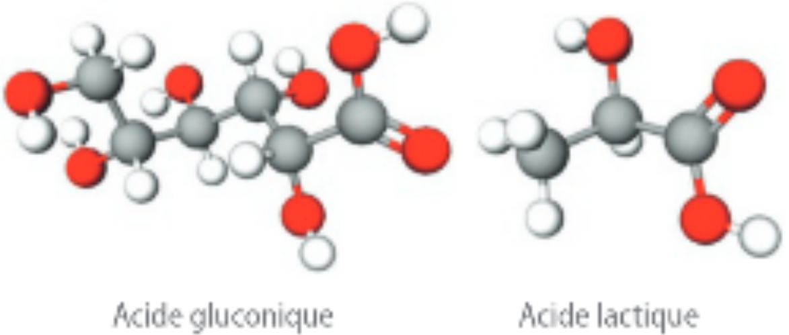
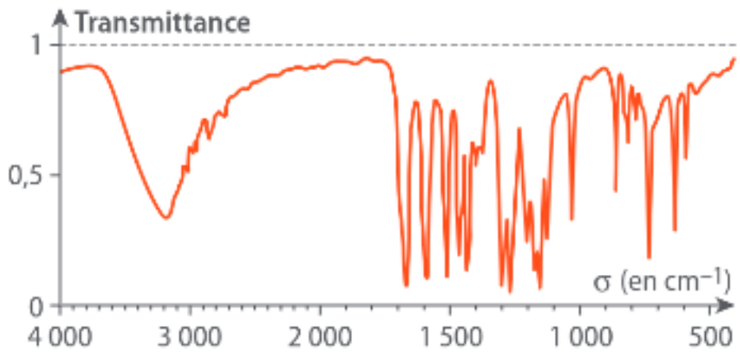
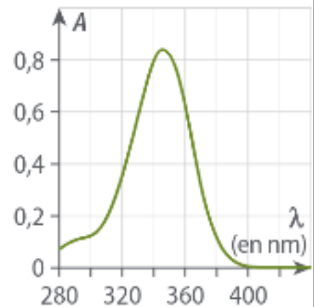

La carie dentaire est une maladie infectieuse d’origine bactérienne
qui détruit progressivement la dent par déminéralisation de ses tissus
durs. Elle évolue toujours de l’extérieur vers l’intérieur de la dent en
formant une cavité.
Elle peut se développer du fait de la présence de plaque dentaire
bactérienne qui est un enduit mou collant se formant sur la surface des
dents à la suite des repas. Les bactéries de la plaque dentaire se
"nourrissent" des glucides contenus dans les aliments et produisent des
acides qui agressent l’émail des dents. De même, une alimentation riche
en acides favorisera la déminéralisation de l’émail.

L’émail est la partie externe de la couronne des dents. Cette substance est la plus dure de l’organisme. Elle est constituée principalement d’hydroxyapatite, forme de phosphate de calcium.
Sachant que les ions calcium et phosphate ont respectivement la forme et , donner la formule du phosphate de calcium solide.
L’atome de phosphore de l’anion phosphate possède cinq doublets
liants autour de lui. Combien un atome d’oxygène neutre possède t il de
doublets liants et non liants ?
Qu’en est il pour un oxygène portant une charge négative?
En déduire le schéma de Lewis de l’anion phosphate.
Montrer que cet anion est une base de Brônsted. Quel est son acide conjugué ? Quelle propriété possède cet acide ?
L’acide glutamique et l’acide lactique, dont les modèles moléculaires sont donnés ci-dessous, peuvent être formés par des bactéries à partir du glucose et du saccharose, sucres présents dans les aliments ingérés.

Donner les schémas de Lewis et les formules brutes de ces molécules.
Montrer que ce sont des acides de Brönsted.
Donner les schémas de Lewis et les formules brutes de leurs bases conjuguées. Justifier.
Écrire l’équation de la réaction entre l’acide lactique formé par
les bactéries et les ions phosphate de l’émail.
Expliquer pourquoi un milieu buccal riche en bactéries présente plis de
risques de développer des caries.
Pourquoi est il parfois conseillé de faire des bains de bouche à l’hydrogénocarbonate de sodium ()?
L’émail peut également être détruit par des acides apportés par
l’alimentation. Ainsi, les dents des consommateurs de sodas et de jus de
fruits sont souvent plus touchés par des lésions d’usure.
Deux adolescentes, Anne et Laure, veulent estimer leur apport quotidien
en ions hydrogène lié à leur consommation de ce type de boissons.
En une journée, Anne boit quatre verres de jus de pamplemousse contenant
de l’acide citrique à la concentration \(c_1\) = 66 mmol L−1 alors que
Laure boit cinq verres de jus de pomme contenant de l’acide malique à la
concentration \(c_2\) =
75 mmol L−1.
Le volume \(V\) d’un verre étant de 200 mL, calculer les quantités de matière \(n_1\) et \(n_2\) d’acide citrique et d’acide malique nues en jour par Anne et Laure.
L’acide citrique, noté AH\(_3\), est un triacide de Brönsted et l’acide malique, noté A’H\(_2\), est un diacide. Proposer une explication à ces termes et en déduire les quantités de matière d’ions hydrogène pouvant être libérés par les acides bus par Anne et Laure. Les comparer et conclure.
Certains traitements dentaires nécessitent au préalable que le dentiste effectue un mordançage de l’émail : une solution d’acide phosphorique réagit avec les ions phosphate de l’émail si bien que la surface de celui-ci devient plus rugueuse.
Écrire l’équation de la réaction qui se produit.
L’arôme de vanille, la vanilline, est utilisé dans de nombreux domaines, comme la parfumerie ou l’industrie agro-alimentaire.
Données :
Masse molaire moléculaire : \(M_{vanilline}\) = 152 g mol−1
Formule semi-développée de la vanilline ci-contre :
La vanilline peut être synthétisée. Pour vérifier la nature de la
molécule synthétisée, on peut étudier son spectre IR.


Justifier que ce spectre correspond bien à la vanilline.
La vanilline contenue dans un échantillon du commerce est extraite à
l’aide du protocole suivant :
Protocole :
Extraire la vanilline d’un mélange d’arôme de vanille liquide du commerce de 1 mL à l’aide du dichlorométhane.
Traiter la phase organique par une solution d’hydroxyde de sodium à 0.1 mol L−1. La phase aqueuse a un volume de 250 mL.
La vanilline réagit avec l’ion hydroxyde pour former l’ion phénolate,
que l’on peut doser par étalonnage. On précise que la concentration en
vanilline est égale à celle de l’ion phénolate.
Le spectre d’absorption de l’ion phénolate est donné ci-après.
Une solution d’ion phénolate est-elle colorée ? Justifier la réponse.
Quelle longueur d’onde faut-il utiliser pour faire la mesure avec un spectrophotomètre ?
On réalise le dosage par étalonnage en utilisant des solutions d’ion phénolate de concentrations \(c\) connues, dont on mesure les absorbances \(A\).
| \(\mathbf{c}\) (en μmol L−1) | |||||
|---|---|---|---|---|---|
| \(\mathbf{A}\) | ,36 | ,08 | ,81 | ,54 | ,27 |
L’absorbance de la solution à doser est \(A\) = 0.88.
Tracer la courbe d’étalonnage.
La loi de Beer-Lambert est elle vérifiée ?
Déterminer en détaillant la méthode utilisée la concentration en vanilline dans la solution à doser.
Compte tenu du protocole suivi, en déduire la concentration en masse en g L−1 de vanilline dans l’échantillon de vanille liquide du commerce.